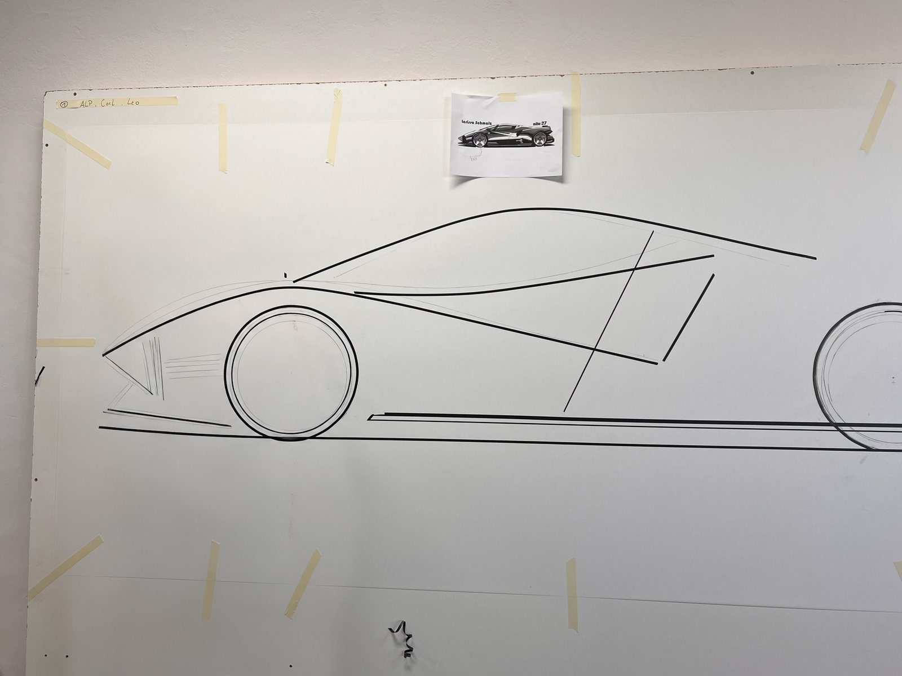
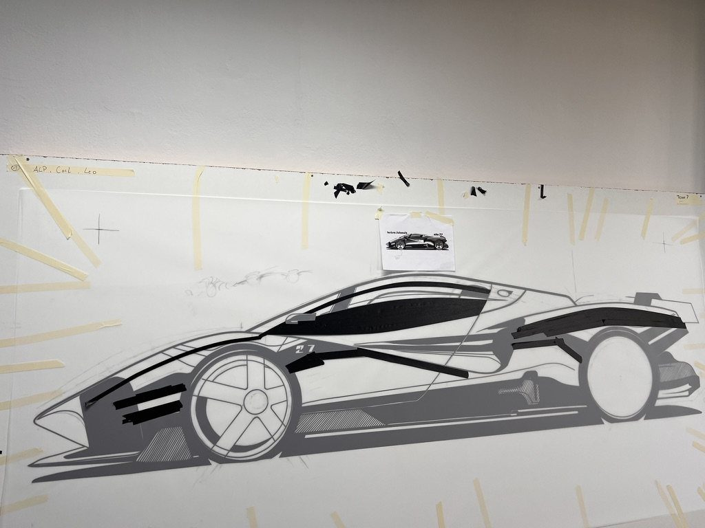
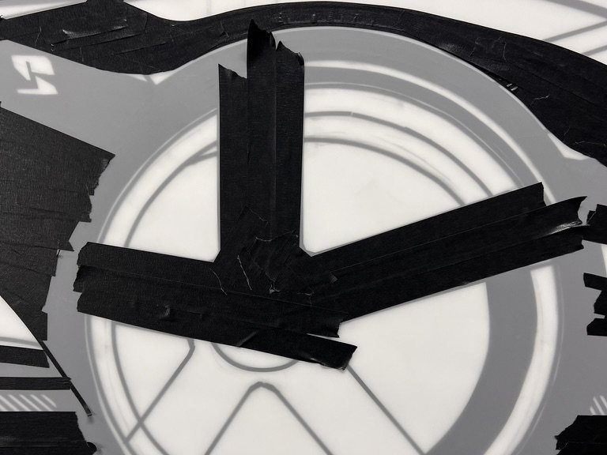
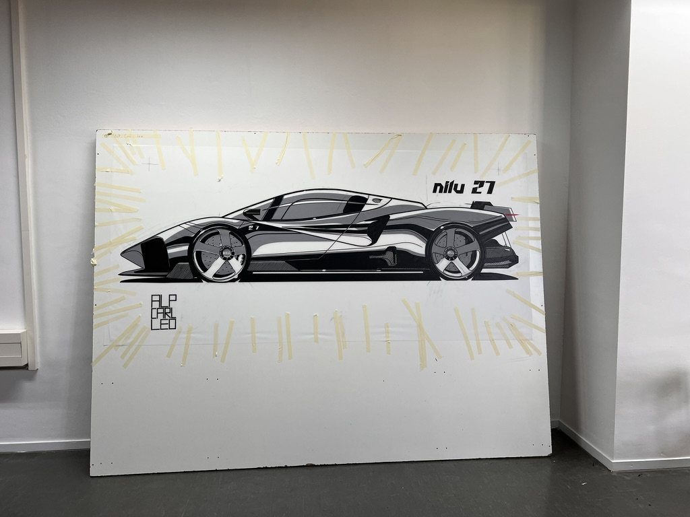
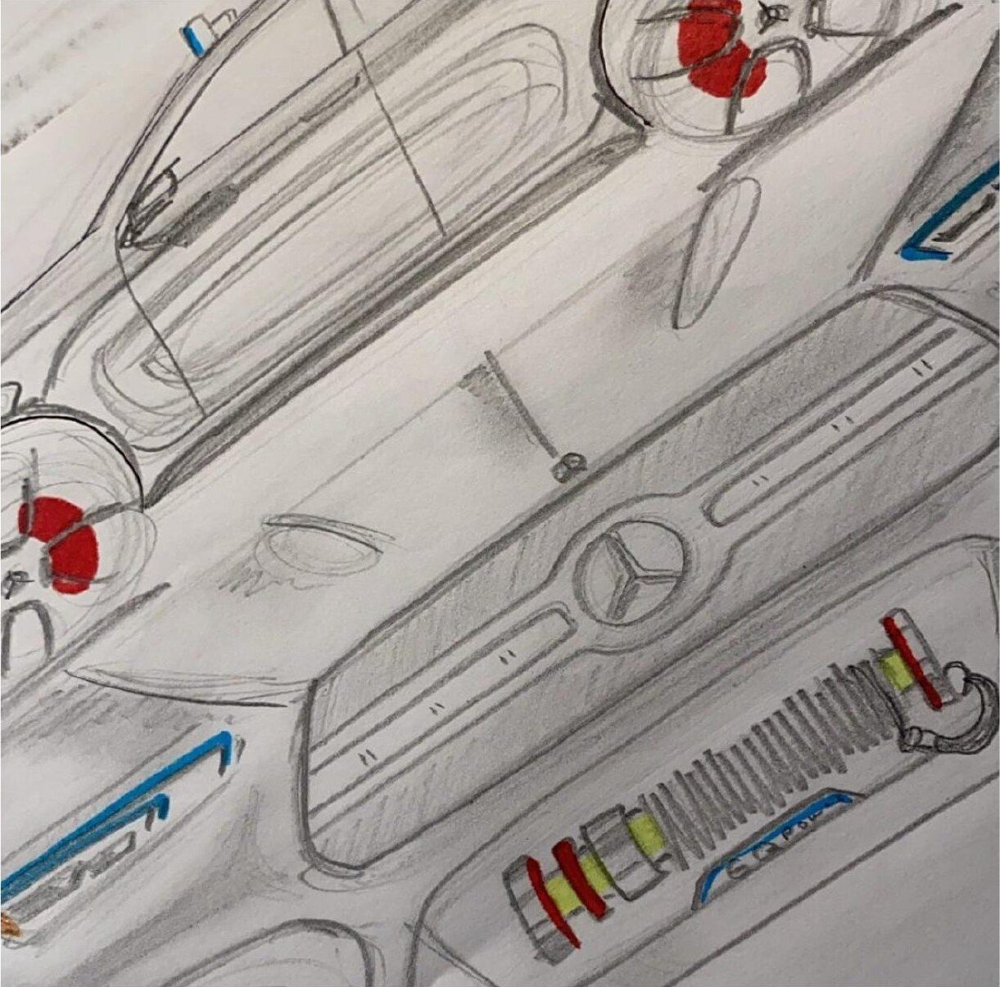
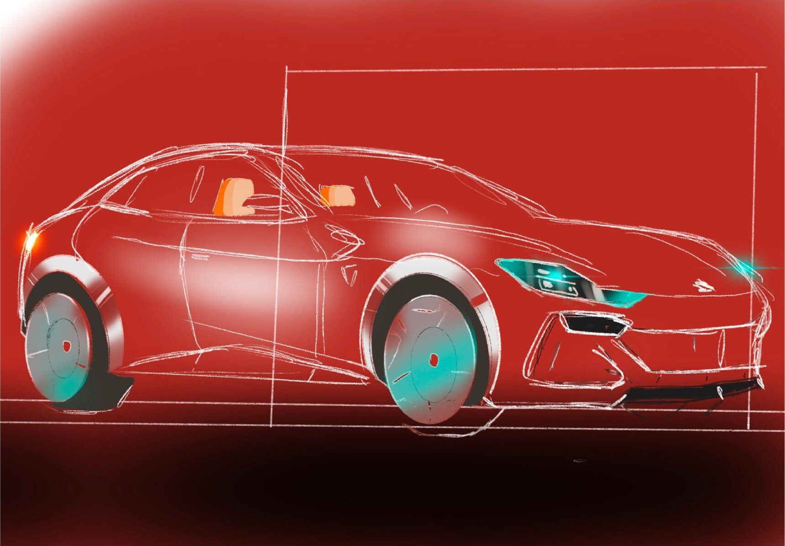
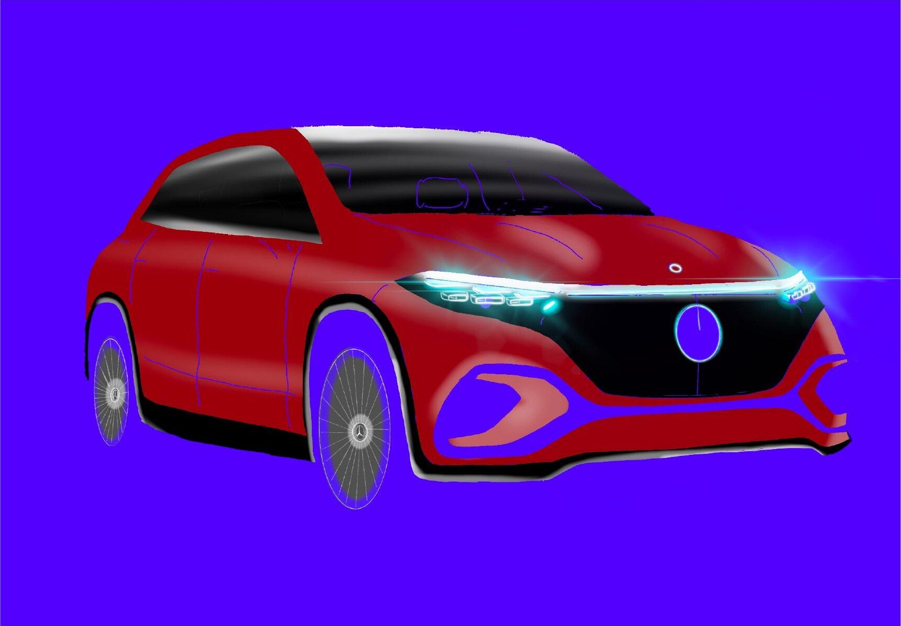
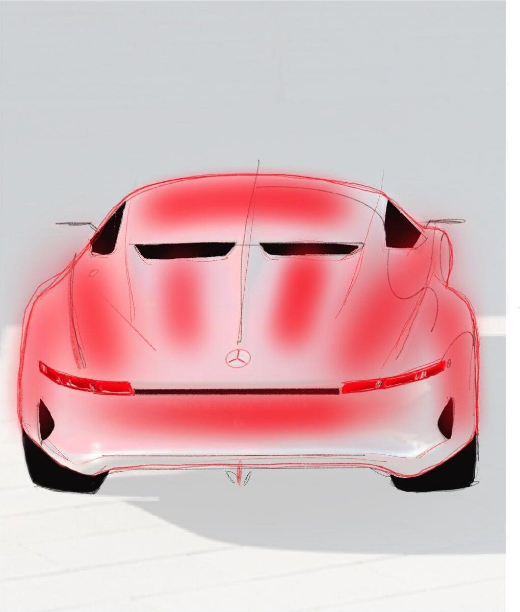

- Where
- HTW Berlin
- Technique
- Full-scale tape rendering
- Team
- Team of three, with Alp Ömer Özbek & Carl Schüring
- Course
- Rendering seminar, Prof. Gerhard Friedrich, Summer 2025
- Duration
- 1 week
und Wirtschaft Berlin
Process
The rendering was built by hand on a white board, about two by three metres, with a printed reference image pinned above it. First the key lines went on in thin black tape: roofline, shoulder, wheel arches and the ground line, constantly checked against the proportions from a distance.
Then grey film blocked in the large surfaces, and wide black tape built up shadows and reflections layer by layer. Details such as the five-spoke wheels were cut and laid directly on the board, until the flat side view reads as a glossy, three-dimensional car.




Sketch gallery
Car sketches from recent years, drawn digitally and by hand: studies of proportion, stance, surfaces and light signatures. Media: digital, marker, pencil (Photoshop, Procreate).
Marker & pencil sketches





In 3D
A Mercedes-AMG GT modelled in Blender. Turn it, zoom in and look at it from every side.
Digital sketches



